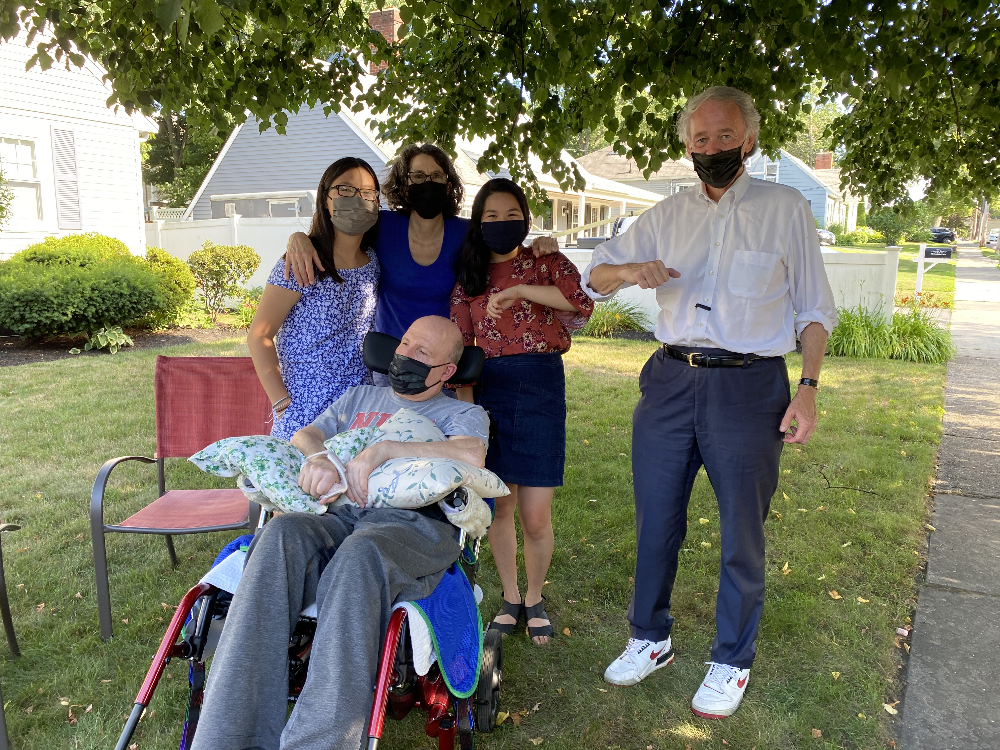
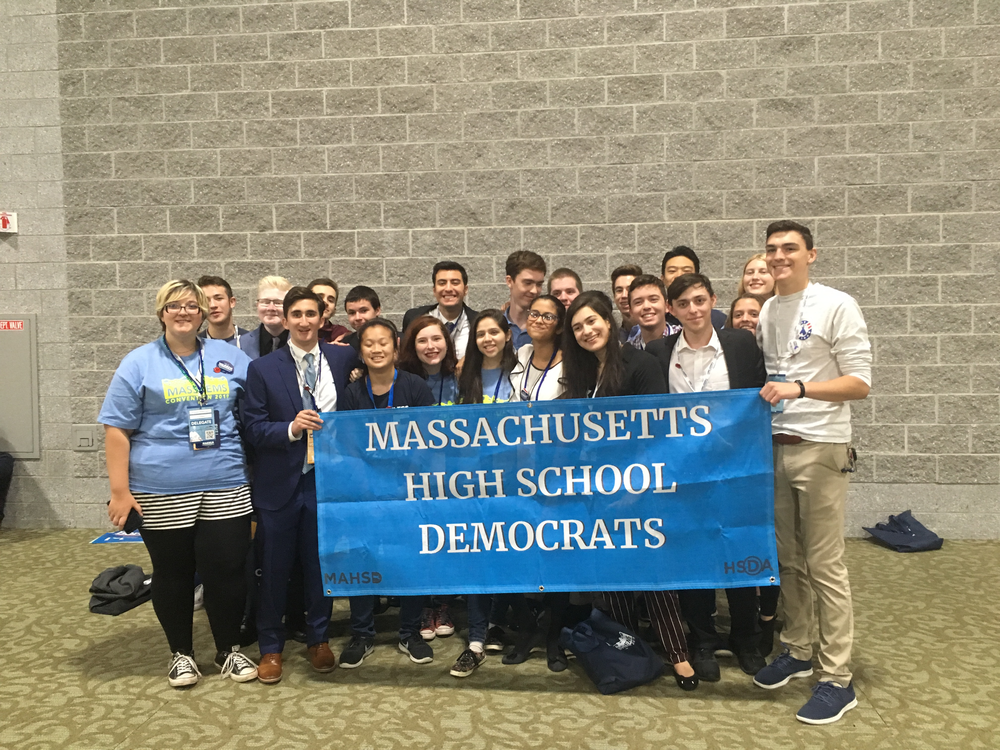
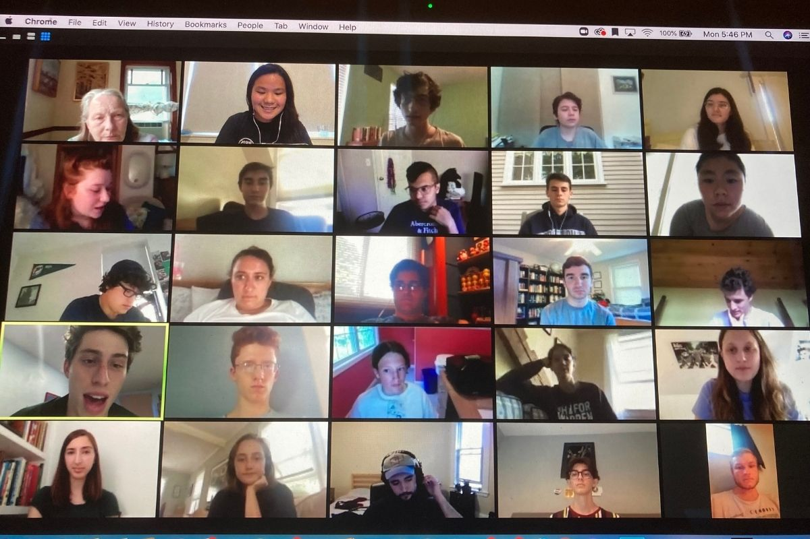
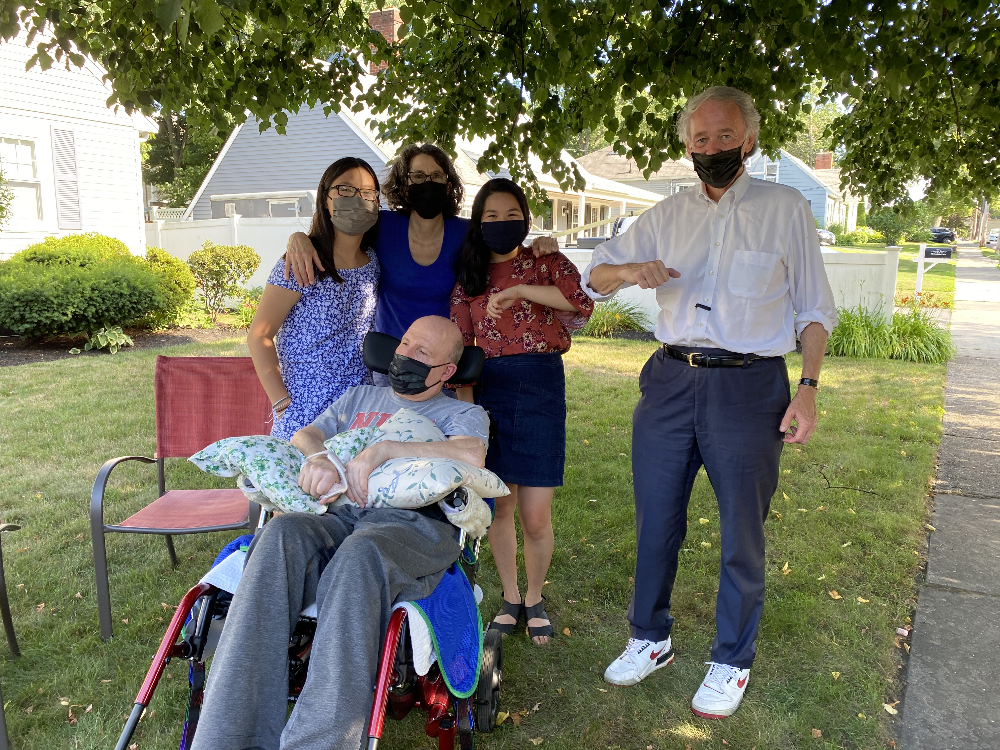
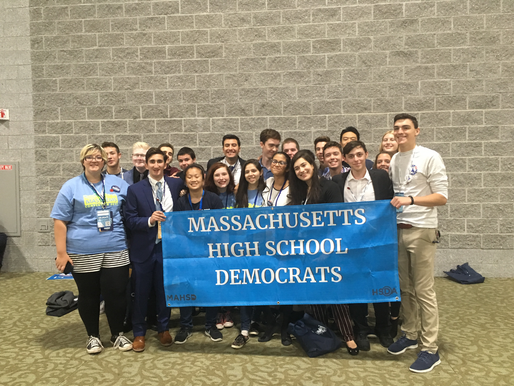
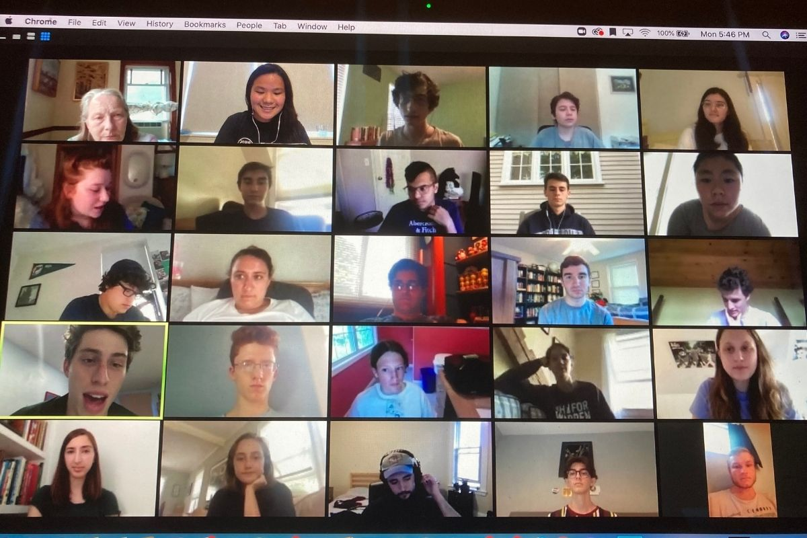

Articles I've been quoted in.
- Tufts for Warren Mobilizes in 2020 Presidential Campaign by Sam Russo.
An article about Tufts for Warren and our work on campus during the 2020 Presidential primary.
- Students Mobilize in New Hampshire for Sanders, Buttigieg, and Warren by Madeleine Aitken.
An article highlighting different student groups mobilizing at Tufts, including Tufts for Warren.
- Center for State Policy Analysis releases report on ranked-choice voting ahead of Mass. ballot question by Coco Arcand.
Article on the 2020 ballot question concerning Ranked Choice Voting.
- 16-Year-Old Students Can Now Be Delegates to the Democratic State Convention in Massachusetts by Rianna Mukherjee.
As Chair of the Massachusetts High School Democrats, I led the successful campaign to allow pre-registered 16 year olds to become delegates to the Democratic State Convention.
- The Countdown: 3 Tufts students making the difference by Matt Rice.
For the Daily's election issue, I was interviewed in this article as a Tufts student activist who worked on the 2020 elections.
- Sunrise Movement advocates, empowers through protest music by Megan Szostak.
An article about Sunrise Tufts's use of protest music and its historical contexts.